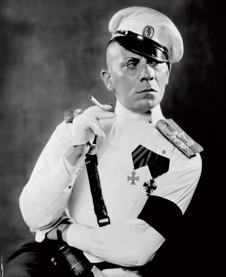
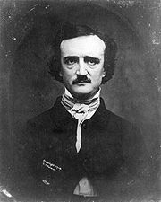

A photograph
of "St. Peter's at a Moment of History" was the cover feature of Life magazine
for June 14, 1963. It is one of the peculiar characteristics of the photo that it isolates
single moments in time. The TV camera does not. The continuous scanning action of the TV
camera provides, not the isolated moment or aspect, but the contour, the iconic profile
and the transparency. Egyptian art, like primitive sculpture today, provided the
significant outline that had nothing to do with a moment in time. Sculpture tends toward
the timeless.
Awareness of
the transforming power of the photo is often embodied in popular stories like the one
about the admiring friend who said, "My, that's a fine child you have there!"
Mother: "Oh, that's nothing. You should see his photograph." The power of the
camera to be everywhere and to interrelate things is well indicated in the Vogue magazine
boast (March 15, 1953): "A woman now, and without having to leave the country, can
have the best of five (or more) nations hanging in her closet—beautiful and
compatible as a statesman's dream." That is why, in the photographic age, fashions
have come to be like the collage style in painting.

Mass production is a cheapening or a prostituting of quality that can be
enjoyed anonymously, without responsibility; comfort food for a society assaulted by
change.
A century
ago the British craze for the monocle gave to the wearer the power of the camera to fix
people in a superior stare, as if they were objects. Eric von Stroheim did a great job
with the monocle in creating the haughty Prussian officer. Both monocle and camera tend to
turn people into things, and the photograph extends and multiplies the human image to the
proportions of mass-produced merchandise. The movie stars and matinee idols are put in the
public domain by photography. They become dreams that money can buy. They can be bought
and hugged and thumbed more easily than public prostitutes. Mass-produced merchandise has
always made some people uneasy in its prostitute aspect. Jean Genet's The Balcony is
a play on this theme of society as a brothel environed by violence and horror. The avid
desire of mankind to prostitute itself stands up against the chaos of revolution. The
brothel remains firm and permanent amidst the most furious changes. In a word, photography
has inspired Genet with the theme of the world since photography as a
Brothel-without-Walls.
In symbolic poetry meaning is achieved without syntax, i.e. unlike metaphor,
there is no logical copula to link disparate images together. Meaning results from the
interval created by the juxtaposition of heterogeneous elements.
Engraving technique consists of conventions of line and shading, such as
stippling, cross-hatching and contour-hatching, which the viewer translates into volumes
and depth of field in a separate operation.
When time and space are limited the first thing to go is syntax.
Nobody can
commit photography alone. It is possible to have at least the illusion of reading and
writing in isolation, but photography does not foster such attitudes. If there is any
sense in deploring the growth of corporate and collective art forms such as the film and
the press, it is surely in relation to the previous individualist technologies that these
new forms corrode. Yet if there had been no prints or woodcuts and engravings, there would
never have come the photograph. For centuries, the woodcut and the engraving had
delineated the world by an arrangement of lines and points that had syntax of a very elaborate kind. Many
historians of this visual syntax, like E. H. Gombrich and William M. Ivins, have been at
great pains to explain how the art of the hand-written manuscript had permeated the art of
the woodcut and the engraving until, with the halftone process, the dots and lines
suddenly fell below the threshold of normal vision. Syntax, the net of rationality,
disappeared from the later prints, just as it tended to disappear from the telegraph
message and from the impressionist painting. Finally, in the pointillisme of
Seurat, the world suddenly appeared through the painting. The direction of a
syntactical point of view from outside onto the painting ended as literary form
dwindled into headlines with the telegraph. With the photograph, in the same way, men had
discovered how to make visual reports without syntax.

Daguerreotype of Poe Nevermore!
It was in
1839 that William Henry Fox Talbot read a paper to the Royal Society which had as title:
"Some account of the Art of Photogenic Drawing, or the process by which Natural
Objects may be made to delineate themselves without the aid of the artist's pencil."
He was quite aware of photography as a kind of automation that eliminated the syntactical
procedures of pen and pencil. He was probably less aware that he had brought the pictorial
world into line with the new industrial procedures. For photography mirrored the external
world automatically, yielding an exactly repeatable visual image. It was this
all-important quality of uniformity and repeatability that had made the Gutenberg break
between the Middle Ages and the Renaissance. Photography
was almost as decisive in making the break between mere mechanical industrialism and the
graphic age of electronic man. The step from the age of Typographic Man to the age
of Graphic Man was taken with the invention of photography. Both daguerrotypes and
photographs introduced light and chemistry into the making process. Natural objects
delineated themselves by an exposure intensified by lens and fixed by chemicals. In the
daguerreotype process there was the same stippling or pitting with minute dots that was
echoed later in Seurat's pointillisme, and is still continued in the newspaper mesh
of dots that is called "wire-photo." Within a year of Daguerre's discovery,
Samuel F. B. Morse was taking photographs of his wife and daughter in New York City. Dots
for the eye (photograph) and dots for the ear (telegraph) thus met on top of a skyscraper.
Need the inversion of the image on the retina, to conform to gravity and to our sense of
balance, be learned? Does a new-born baby see the world upside down? This assumes the
optic nerve is mapped exactly as tactile data from the sense of touch and the semicircular
canals. The blind perceive objects and
experience three-dimensional space through kinesthetic innervation and their nerve endings. It is
far more plausible visual information is hardwired from the retina to preset coordinates
in the visual cortex.
A further
cross-fertilization occurred in Talbot's invention of the photo, which he imagined as an
extension of the camera obscura, or pictures in "the little dark room,"
as the Italians had named the picture play-box of the sixteenth century. Just at the time
when mechanical writing had been achieved by movable types, there grew up the pastime of
looking at moving images on the wall of a dark room. If there is sunshine outside and a
pinhole in one wall, then the images of the outer world will appear on the wall opposite.
This new discovery was very exciting to painters, since it intensified the new illusion of
perspective and of the third dimension that is so closely related to the printed word. But
the early spectators of the moving image in the sixteenth century saw those images upside
down. For this reason the lens was introduced—in order to turn the picture right side
up. Our normal vision is also upside down. Psychically,
we learn to turn our visual world right side up by translating the retinal impression from
visual into tactile and kinetic terms. Right side up is apparently something we
feel but cannot see directly.
Thus the neutrally buoyant diver who loses
contact with both the bottom and surface, and in a state of sensory deprivation, becomes
spatially disoriented, swimming downward to his death rather than upward to safety.
Right-side-up
orientation, says McLuhan, is learned or induced in a literate culture by its writing
system. But if this is so, why do both animals and illiterates instinctively avoid walking
off cliffs?
To the
student of media, the fact that "normal" right-side-up vision is a translation
from one sense into another is a helpful hint about the kinds of activity of distortion
and translation that any language or culture induces in all of us. Nothing amuses the
Eskimo more than for the white man to crane his neck to see the magazine pictures stuck on
the igloo walls. For the Eskimo no more needs to look at a picture right side up than does
a child before he has learned his letters on a line. Just why Westerners should be
disturbed to find that natives have to learn to read pictures, as we learn to read
letters, is worth consideration. The extreme bias and distortion of our sense-lives by our
technology would seem to be a fact that we prefer to ignore in our daily lives. Evidence
that natives do not perceive in perspective or sense the third dimension seems to threaten
the Western ego-image and structure, as many have found after a trip through the Ames
Perception Laboratory at Ohio State University. This lab is arranged to reveal the various
illusions we create for ourselves in what we consider to be "normal" visual
perception.
Freud believed the unconscious held many secrets, and modern man may suspect that it is
even at the heart of civilization's attempts to destroy itself.
That we have
accepted such bias and obliquity in a subliminal way through most of human history is
clear enough. Just why we are no longer content to leave our experience in this subliminal
state, and why many people have begun to get very conscious about the unconscious, is a
question well worth investigation. People are nowadays much concerned to set their houses
in order, a process of self-consciousness that has received large impetus from
photography.
But what of the ornithologically accurate paintings and drawings of John James Audubon
and illustrations of other naturalists?
The telltale vapor trails left by subatomic particles in a 'cloud chamber.'
William
Henry Fox Talbot, delighting in Swiss scenery, began to reflect on the camera obscura and
wrote that "it was during these thoughts that the idea occurred to me… how
charming it would be if it were possible to cause these natural images to imprint
themselves durably, and remain fixed on paper!" The printing press had, in the
Renaissance, inspired a similar desire to give permanence to daily feelings and
experience.
The method
Talbot devised was that of printing positives chemically from negatives, to yield an
exactly repeatable image. Thus the roadblock that had impeded the Greek botanists and had
defeated their successors was removed. Most of the sciences had been, from their origins,
utterly handicapped by the lack of adequate nonverbal means of transmitting information.
Today, even subatomic physics would be unable to develop without the photograph.
The Sunday New York
Times for June 15, 1958 reported:
TINY CELLS
"SEEN" BY NEW TECHNIQUE
Microphoretic Method Spots Million-Billionth
of Gram, London Designer Says
Samples of substances weighing less than a
million-billionth of a gram can be analysed by a new British microscopic technique. This
is the "microphoretic method" by Bernard M. Turner, a London biochemical analyst
and instruments designer. It can be applied to the study of the cells of the brain and
nervous system, cell duplication including that in cancerous tissue, and it will assist,
it is believed, in the analyses of atmospheric pollution by dust….
In effect, an electric current pulls or pushes
the different constituents of the sample into zones where they would normally be
invisible.
The energy level required for verbal comprehension is at least twice that of visual
perception. But merely because language is more difficult doesn't mean that verbal art is
superior to pictorial art like cinema. If reading a novel is a richer experience than
watching a movie it is because language has the power to express complex ideas with
elegance, nuance and grace, and to stimulate the imagination, i.e. to give 'to airy
nothing a local habitation and a name.'
It should be noted here that M.M. is using the word 'amputation' in a different sense
than it is used in Chapter 4, where it referred to the subliminal
'auto-amputation' rather than a conscious decision to eliminate an extension.
However, to
say that "the camera cannot lie" is merely to underline the multiple deceits
that are now practiced in its name. Indeed, the world of the movie that was prepared by
the photograph has become synonymous with illusion and fantasy, turning society into what
Joyce called an "allnights newsery reel," that substitutes a "reel"
world for reality. Joyce knew more about the effects of the photograph on our senses, our
language, and our thought processes than anybody else. His verdict on the "automatic
writing" that is photography was the abnihilization of the etym. He saw the
photo as at least a rival, and perhaps a usurper, of the word, whether written or spoken.
But if etym (etymology) means the heart and core and moist substance of those
beings that we grasp in words, then Joyce may well have meant that the photo was a new
creation from nothing (ab-nihil), or even a reduction of creation to a photographic negative.
If there is, indeed, a terrible nihilism in the photo and a substitution of shadows for
substance, then we are surely not the worse for knowing it. The technology of the photo is
an extension of our own being and can be withdrawn from circulation like any other
technology if we decide that it is virulent. But amputation of such extensions of
our physical being calls for as much knowledge and skill as are prerequisite to any other
physical amputation.
A snapshot captures the mood of a person in an unguarded moment. Recording
gesture, micro-expression and posture focused attention on the inner life of the
individual, probed by psychoanalysis. Freud identified 'complexes' causing
pathology. Jung discovered universal archetypes of the 'collective unconscious.'
If the
phonetic alphabet was a technical means of severing the spoken word from its
aspects of sound and gesture, the photograph and its development in the movie restored gesture
to the human technology of recording experience. In fact, the snapshot of arrested human
postures by photography directed more attention to physical and psychic posture than ever
before. The age of the photograph has become
the age of gesture and mime and dance, as no other age has ever been. Freud and
Jung built their observations on the interpretation of the languages of both individual
and collective postures and gestures with respect to dreams and to the ordinary acts of
everyday life. The physical and psychic gestalts, or "still" shots, with
which they worked were much owing to the posture
world revealed by the photograph. The photograph is just as useful for collective,
as for individual, postures and gestures, whereas written and printed language is biased
toward the private and individual posture. Thus, the traditional figures of rhetoric were
individual postures of mind of the private speaker in relation to an audience, whereas
myth and Jungian archetypes are collective postures of the mind with which the written
form could not cope, any more than it could command mime and gesture. Moreover, that the
photograph is quite versatile in revealing and arresting posture and structure wherever it
is used, occurs in countless examples, such as the analysis of bird-flight. It was the
photograph that revealed the secret of bird-flight and enabled man to take off. The photo,
in arresting bird-flight, showed that it was based on a principle of wing fixity. Wing
movement was seen to be for propulsion, not for flight.
The paintings of Philip Guston and other expressionists invite the viewer
to participate in the creative process. Instead of a consumer he is a producer, for the
painting cannot be completed without his interaction.
Surely McLuhan means 'pistons.'
Matter is only structured energy. The electric universe does not rely on
discrete material parts and mechanical forces, but on organic energy, i.e. statistical
entities like quanta, plasmas, photons, etc. that operate in space-time at the speed of
light. Chance comprehends teleology, e.g. the existence of a higher power.
Perhaps the
great revolution produced by photograph was in the traditional arts. The painter could no
longer depict a world that had been much photographed. He turned, instead, to reveal the
inner process of creativity in expressionism and in abstract art. Likewise, the novelist
could no longer describe objects or happenings for readers who already knew what was
happening by photo, press, film, and radio. The
poet and novelist turned to those inward gestures of the mind by which we achieve insight
and by which we make ourselves and our world. Thus art moved from outer matching to
inner making. Instead of depicting a world that matched the world we already knew, the
artists turned to presenting the creative process for public participation. He has given
to us now the means of becoming involved in the making-process. Each development of the
electric age attracts, and demands, a high degree of producer-orientation. The age of the
consumer of processed and packaged goods is, therefore, not the present electric age, but
the mechanical age that preceded it. Yet, inevitably, the age of the mechanical has had to
overlap with the electric, as in such obvious instances as the internal combustion engine
that requires the electric spark to ignite the explosion that moves its cylinders. The
telegraph is an electric form that, when crossed with print and rotary presses, yields the
modern newspaper. And the photograph is not a machine, but a chemical and light process
that, crossed with the machine, yields the movie. Yet there is a vigor and violence in
these hybrid forms that is self-liquidating, as it were. For in radio and TV—purely
electric forms from which the mechanical principle has been excluded—there is an
altogether new relation of the medium to its users. This is a relation of high
participation and involvement that, for good or ill, no mechanism had ever evoked.
Education is
ideally civil defense against media fall-out. Yet Western man has had, so far, no
education or equipment for meeting any of the new media on their own terms. Literate man
is not only numb and vague in the presence of film or photo, but he intensifies his
ineptness by a defensive arrogance and condescension to "pop kulch" and
"mass entertainment." It was in this spirit of bulldog opacity that the
scholastic philosophers failed to meet the challenge of the printed book in the sixteenth
century. The vested interests of acquired knowledge and conventional wisdom have always
been by-passed and engulfed by new media. The study of this process, however, whether for
the purpose of fixity or of change, has scarcely begun. The notion that self-interest
confers a keener eye for recognizing and controlling the processes of change is quite
without foundation, as witness the motorcar industry. Here is a world of obsolescence as
surely doomed to swift erosion as was the enterprise of the buggy- and wagon-makers in
1915. Yet does General Motors, for example, know, or even suspect, anything about the
effect of the TV image on the users of motorcars? The magazine enterprises are similarly
undermined by the TV image and its effect on the advertising icon. The meaning of the new
ad icon has not been grasped by those who stand to lose all. The same is true of the movie
industry in general. Each of these enterprises lacks any "literacy" in any
medium but its own, and thus the startling changes resulting from new hybrids and
crossings of media catch them unawares. To the student of media structures, every detail
of the total mosaic of the contemporary world is vivid with meaningful life. As early as
March 15, 1953, Vogue magazine announced a new hybrid, resulting from a cross
between photograph and air travel:
This first International Fashion Issue of Vogue
is to mark a new point. We couldn't have done such an issue before. Fashion only got
its internationalization papers a short time ago, and for the first time in one issue we
can report on couture collections in five countries.
Just as dreams yielded a rich vein of
psychopathology for diagnostic epiphany, popular culture provided a gold mine of
information for students of media.
The thesis of The Mechanical Bride.
Mime: story-telling by non-verbal means, e.g. with facial expression and gesture.
The
advantages of such ad copy as high-grade ore in the lab of the media analyst can be
recognized only by those trained in the language of vision and of the plastic arts in
general. The copy writer has to be a strip-tease artist who has entire empathy with the
immediate state of mind of the audience. Such, indeed, is also the aptitude of the popular
novelist or song writer. It follows that any widely accepted writer or entertainer
embodies and reveals a current set of attitudes that can be verbalized by the analyst.
"Do you read me, Mac?" But were the words of the Vogue writer to be
considered merely on literary or editorial grounds, their meaning would be missed, just as
the copy in a pictorial ad is not to be
considered as literary statement but as mime of the psychopathology of everyday life.
In the age of the photograph, language takes on a graphic or iconic character, whose
"meaning" belongs very little to the semantic universe, and not at all to the
republic of letters.
The double-knit polyester leisure suits and tasseled two-toned patent leather loafers
of the 70s. (What were they thinking?)
If we open a
1938 copy of Life, the pictures or postures then seen as normal now give a sharper
sense of remote time than do objects of real antiquity. Small children now attach the
phrase "the olden days" to yesterday's hats and overshoes, so keenly are they
attuned to the abrupt seasonal changes of visual posture in the world of fashions. But the
basic experience here is one that most people feel for yesterday's newspaper, than which
nothing could be more drastically out of fashion. Jazz musicians express their distaste
for recorded jazz by saying, "It is as stale as yesterday's newspaper."
The need to be with it that drives fashion is a symptom of social inferiority,
a fear of rejection, i.e. lemming psychology.
The gestures, postures and archetypes captured by the photograph are a reflection of
our human solidarity, of our affiliation with The Family of Man, of our
disposition in the creation. The photograph is a representation of the human race as such,
not its ethnic, religious or political differences. Like the human genome, it illuminates
the traits that unite us rather than those that divide us.
Why most movies from the 30s and 40s strike us as so corny, manipulative and insincere.
Perhaps that
is the readiest way to grasp the meaning of the photograph in creating a world of
accelerated transience. For the relation we have to "today's newspaper," or
verbal jazz, is the same that people feel for fashions. Fashion is not a way of being
informed or aware, but a way of being with it. That, however, is merely to draw
attention to a negative aspect of the photograph. Positively, the effect of speeding up
temporal sequence is to abolish time, much as the telegraph and cable abolished space. Of
course the photograph does both. It wipes out
our national frontiers and cultural barriers, and involves us in The Family of Man, regardless
of any particular point of view. A picture of a group of persons of any hue
whatever is a picture of people, not of "colored people." That is the logic of
the photograph, politically speaking. But the logic of the photograph is neither verbal
nor syntactical, a condition which renders literary culture quite helpless to cope with
the photograph. By the same token, the complete transformation of human sense-awareness by
this form involves a development of self-consciousness that alters facial expression and
cosmetic makeup as immediately as it does our bodily stance, in public or in private. This
fact can be gleaned from any magazine or movie of fifteen years back. It is not too much
to say, therefore, that if outer posture is affected by the photograph, so with our inner
postures and the dialogue with ourselves. The age of Jung and Freud is, above all, the age
of the photograph, the age of the full gamut of self-critical attitudes.
A Biblical cleansing of sin. The photo tells us
who we are. Thus the urgency of 'getting straight,' of 'getting clean' (of addiction), of
'cleaning up our act,' the 'self-improvement' fad.
This immense
tidying-up of our inner lives, motivated by the new picture gestalt culture, has
had its obvious parallels in our attempts to rearrange our homes and gardens and our
cities. To see a photograph of the local slum makes the condition unbearable. The mere
matching of the picture with reality provides a new motive for change, as it does a new
motive for travel.
Missionaries and Peace Corps Volunteers learn the language and immerse themselves in the
culture. The average tourist might as well be reading National Geographic.
Daniel
Boorstin in The Image: or What Happened to the American Dream offers a conducted literary
tour of the new photographic world of travel. One has merely to look at the new
tourism in a literary perspective to discover that it makes no sense at all. To the
literary man who has read about Europe, in leisurely anticipation of a visit, an ad that
whispers: "You are just fifteen gourmet meals from Europe on the world's
fastest ship" is gross and repugnant. Advertisements of travel by plane are worse:
"Dinner in New York, indigestion in Paris." Moreover, the photograph has
reversed the purpose of travel, which until now had been to encounter the strange and
unfamiliar. Descartes, in the early seventeenth century, had observed that traveling was
almost like conversing with men of other centuries, a point of view quite unknown before
his time. For those who cherish such quaint experience, it is necessary today to go back
very many centuries by the art and archaeology route. Professor Boorstin seems unhappy
that so many Americans travel so much and are changed by it so little. He feels that the
entire travel experience has become "diluted, contrived, prefabricated." He is
not concerned to find out why the photograph has done this to us. But in the same way
intelligent people in the past always deplored the way in which the book had become a
substitute for inquiry, conversation, and reflection, and never troubled to reflect on the
nature of the printed book. The book reader has always tended to be passive, because that
is the best way to read. Today, the traveler has become passive. Given travelers checks, a
passport, and a toothbrush, the world is your oyster. The macadam road, the railroad, and
the steamship have taken the travail out of travel. People moved by the silliest
whims now clutter the foreign places, because travel
differs very little from going to a movie or turning the pages of a magazine. The
"Go Now, Pay Later" formula of the travel agencies might as well read: "Go
now, arrive later," for it could be argued that such people never really leave their beaten paths
of impercipience, nor do they ever arrive at any new place. They can have Shanghai
or Berlin or Venice in a package tour that they need never open. In 1961, TWA began to
provide new movies for its trans-Atlantic flights so that you could visit Portugal,
California, or anywhere else, while en route to Holland, for example. Thus the world
itself becomes a sort of museum of objects that have been encountered before in some other
medium. It is well known that even museum curators often prefer colored pictures to the
originals of various objects in their own cases. In the same way, the tourist who arrives
at the Leaning Tower of Pisa, or the Grand Canyon of Arizona, can now merely check his
reactions to something with which he has long been familiar, and take his own pictures of
the same.
A contentious issue, for while 'difficulty of
access does not confer adequacy of perception,' and deciphering text is more laborious
than processing pictorial information, it is arguably a richer experience than (say)
watching a movie because of the power of words to stimulate imagination.
Referring to the capacity of the ancient bards like Homer to recite epic poems from
memory, Plato warns us in Phaedrus of the danger of the written word, predicting
that writing would replace living memory as a mnemonic device.
To lament
that the packaged tour, like the photograph, cheapens and degrades by making all places
easy of access, is to miss most of the game. It is to make value judgments with fixed reference
to the fragmentary perspective of literary culture. It is the same position that considers
a literary landscape as superior to a movie travelogue. For the untrained awareness, all reading and all
movies, like all travel, are equally banal and unnourishing as experience.
Difficulty of access does not confer adequacy of perception, though it may involve an
object in an aura of pseudo-values, as with a gem, a movie star, or an old master. This
now brings us to the factual core of the "pseudoevent," a label applied to the
new media, in general, because of their power to give new patterns to our lives by
acceleration of older patterns. It is necessary to reflect that this same insidious power
was once felt in the old media, including languages. All media exist to invest our lives with artificial
perception and arbitrary values.
The suggestion by some critics that the speedup
provided by IT, such as word processing, email, and plenary retrieval by Internet search
engines, will not alter the essential nature of scholarship and education is quite without
foundation. It is based on the assumption that the human mind possesses infinite capacity,
similar to that observed in some idiot-savants. Novelist Henry Roth named his word
processor 'Ecclesias.' from the Greek word, ekklesia (to summon forth).
The highway is obsolete. Anyone travelling backwards is only exacerbating the
situation.
Traditional societies find the Western obsession with newfangledness perplexing.
Doubtless some innovation is useful and necessary, but how can one enjoy the good life
when, instead of living in the moment, all one's waking hours are devoted to the
acquisition of the next 'convenient' kitchen utensil?
All meaning
alters with acceleration, because all patterns of personal and political interdependence
change with any acceleration of information. Some feel keenly that speed-up has
impoverished the world they knew by changing its forms of human interassociation. There is
nothing new or strange in a parochial preference for those pseudo-events that happened to
enter into the composition of society just before the electric revolution of this century.
The student of media soon comes to expect the new media of any period whatever to be
classed as pseudo by those who have acquired the patterns of earlier media,
whatever they may happen to be. This would seem to be a normal, and even amiable, trait
ensuring a maximal degree of social continuity and permanence amidst change and
innovation. But all the conservatism in the world does not afford even a token resistance
to the ecological sweep of the new electric media. On a moving highway the vehicle that
backs up is accelerating in relation to the highway situation. Such would seem to be the
ironical status of the cultural reactionary. When the trend is one way his resistance
insures a greater speed of change. Control over change would seem to consist in moving not
with it but ahead of it. Anticipation gives the power to deflect and control force. Thus
we may feel like a man who has been hustled away from his favorite knothole in the ball
park by a frantic rout of fans eager to see the arrival of a movie star. We are no sooner
in position to look at one kind of event than it is obliterated by another, just as our Western lives seem to native cultures to be one
long series of preparations for living. But the favorite stance of
literary man has long been "to view with alarm" or "to point with
pride," while scrupulously ignoring what's going on.
This predilection to be in a continuous state of
preparation is a familiar attitude and strategy of the progressive mind, which envisions
utopia as a continuous process of social amelioration realized in the future. In contrast,
the conservative mind is content to excavate eternity in the moment, to seek perfection in
the here and now.
One immense
area of photographic influence that affects our lives is the world of packaging and
display and, in general, the organization of shops and stores of every kind. The newspaper
that could advertise every sort of product on one page quickly gave rise to department
stores that provided every kind of product under one roof. Today the decentralizing of
such institutions into a multiplicity of small shops in shopping plazas is partly the
creation of the car, partly the result of TV. But the photograph still exerts some
centralist pressure in the mail-order catalogue. Yet the mail-order houses originally felt
not only the centralist forces of railway and postal services, but also, and at the same
time, the decentralizing power of the telegraph. The Sears Roebuck enterprise was directly
owing to stationmaster use of the telegraph. These men saw that the waste of goods on
railway sidings could be ended by the speed of the telegraph to reroute and concentrate.
The complex
network of media, other than the photograph that appears in the world of merchandising, is
easier to observe in the world of sports. In one instance, the press camera contributed to
radical changes in the game of football. A press photo of battered players in a 1905 game
between Pennsylvania and Swarthmore came to the attention of President Teddy Roosevelt. He
was so angered at the picture of Swarthmore's mangled Bob Maxwell that he issued an
immediate ultimatum—that if rough play continued, he would abolish the game by
executive edict. The effect was the same as that of the harrowing telegraph reports of
Russell from the Crimea, which created the image and role of Florence Nightingale.
No less
drastic was the effect of the press photo coverage of the lives of the rich.
"Conspicuous consumption" owed less to the phrase of Veblen than to the press
photographer, who began to invade the entertainment spots of the very rich. The sights of
men ordering drinks from horseback at the bars of clubs quickly caused a public revulsion
that drove the rich into the ways of timid mediocrity and obscurity in America, which they
have never abandoned. The photograph made it quite unsafe to come out and play, for it
betrayed such blatant dimensions of power as to be self-defeating. On the other hand, the
movie phase of photography created a new aristocracy of actors and actresses, who
dramatized, on and off the screen, the fantasia of conspicuous consumption that the rich
could never achieve. The movie demonstrated the magic power of the photo by providing a
consumer package of plutocratic dimension for all the Cinderellas in the world.
See Tennyson and Picturesque Poetry, by Marshal McLuhan
The ubiquity of the photo rendered the pastoral and pictureque commonplace, showing the
way to the interior landscape.
The
Gutenberg Galaxy provides the necessary background for studying the rapid rise of new
visual values after the advent of printing from movable types. "A place for
everything and everything in its place" is a feature not only of the compositor's
arrangement of his type fonts, but of the entire range of human organization of knowledge
and action from the sixteenth century onward. Even the inner life of the feelings and
emotions began to be structured and ordered and analyzed according to separate pictorial
landscapes, as Christopher Hussey explained in his fascinating study of The
Picturesque. More than a century of this pictorial analysis of the inner life preceded
Talbot's 1839 discovery of photography. Photography, by carrying the pictorial delineation
of natural objects much further than paint or language could do, had a reverse effect.
By conferring a means of self-delineation of objects, of "statement without
syntax," photography gave the impetus to a delineation of the inner world. Statement without syntax or verbalization was
really statement by gesture, by mime, and by gestalt. This new dimension
opened for human inspection by poets like Baudelaire and Rimbaud le paysage interieur, or the countries of
the mind. Poets and painters invaded this inner landscape world long before Freud
and Jung brought their cameras and notebooks to capture states of mind. Perhaps most
spectacular of all was Claude Bernard, whose Introduction to the Study of Experimental
Medicine ushered science into le milieu interieur of the body exactly at the
time when the poets did the same for the life of perception and feeling.
Pictorial subjects are posed. Photographs capture micro-expressions alla
Frans Hals.
It is
important to note that this ultimate stage of pictorialization was a reversal of pattern.
The world of body and mind observed by Baudelaire and Bernard was not photographical at
all, but a nonvisual set of relations such as the physicist, for example, had encountered
by means of the new mathematics and statistics. The photograph might be said, also, to
have brought to human attention the subvisual world of bacteria that caused Louis Pasteur
to be driven from the medical profession by his indignant colleagues. Just as the painter
Samuel Morse had unintentionally projected himself into the nonvisual world of the
telegraph, so the photograph really
transcends the pictorial by capturing the inner gestures and postures of both body and
mind, yielding the new worlds of endocrinology and psychopathology.
To
understand the medium of the photograph is quite impossible, then, without grasping its
relations to other media, both old and new. For media, as extensions of our physical and
nervous systems, constitute a world of biochemical interactions that must ever seek new
equilibrium as new extensions occur. In America, people can tolerate their images in
mirror or photo, but they are made uncomfortable by the recorded sound of their own
voices. The photo and visual worlds are secure areas of anesthesia.